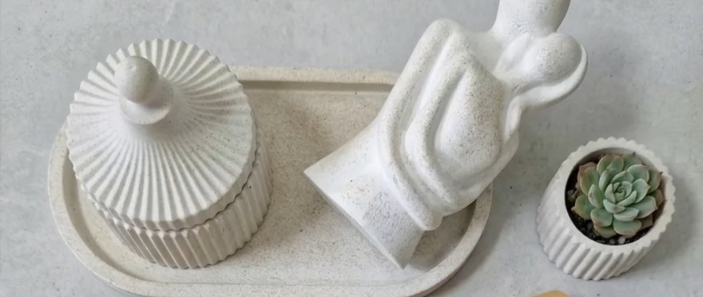
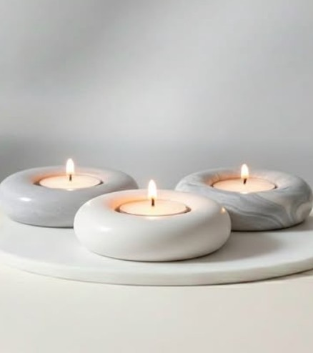
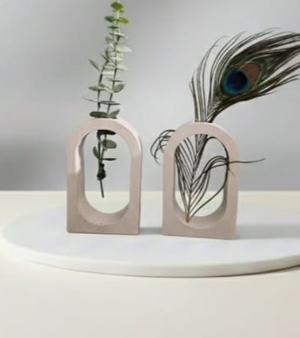
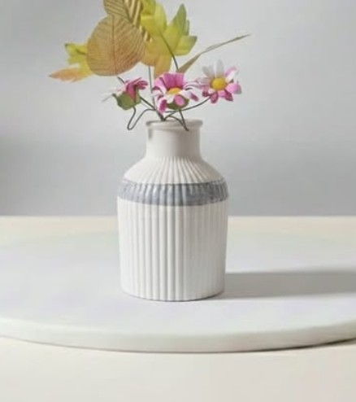
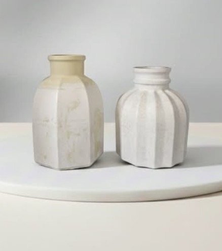
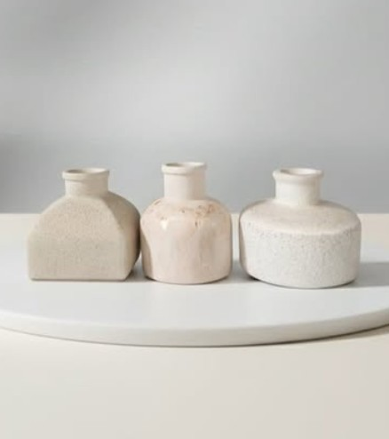
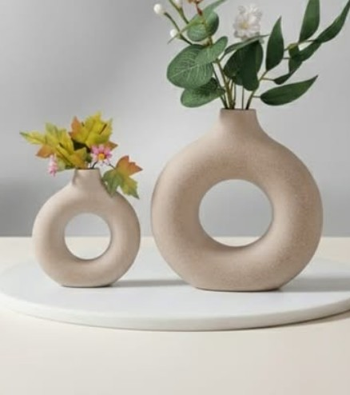
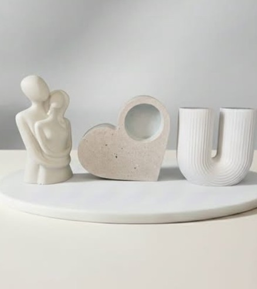
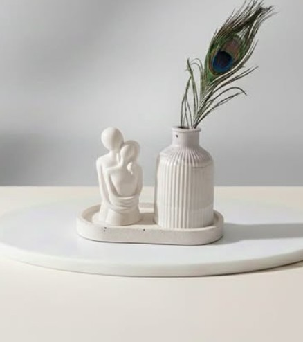

Morso – חפצים יצוקים לבית
יש רק אחד כזה. והוא שלך.
חפצים לבית, יצוקים ביד מבטון פולימרי
תהליך הייצור בסטודיו מבוסס על מלאכת יד מוקפדת ופרטנית. בשל תהליך היציקה והשיוף של הבטון הפולימרי אין שני פריטים זהים, ולכל כלי אופי ייחודי וטקסטורה משלו.
בטון פולימרי הוא חומר צפוף ועמיד, עם המגע הקריר והמחוספס של אבן. נקודות קטנות בגוון, שינויי מרקם וקצוות רכים הם חלק מהיציקה, לא פגם בה.
את כל הפריטים, המידות והמחירים ריכזנו בקטלוג אחד בוואטסאפ.

מהקטלוג








אלה רק חלק מהפריטים. כל השאר נמצאים בקטלוג.
איך מזמינים
-
פותחים את הקטלוג בוואטסאפ ומעיינים בפריטים.
-
בוחרים פריט ושולחים לנו הודעה ישירות מתוך הקטלוג.
-
חוזרים אליכם בהודעה כדי לסגור את פרטי ההזמנה.